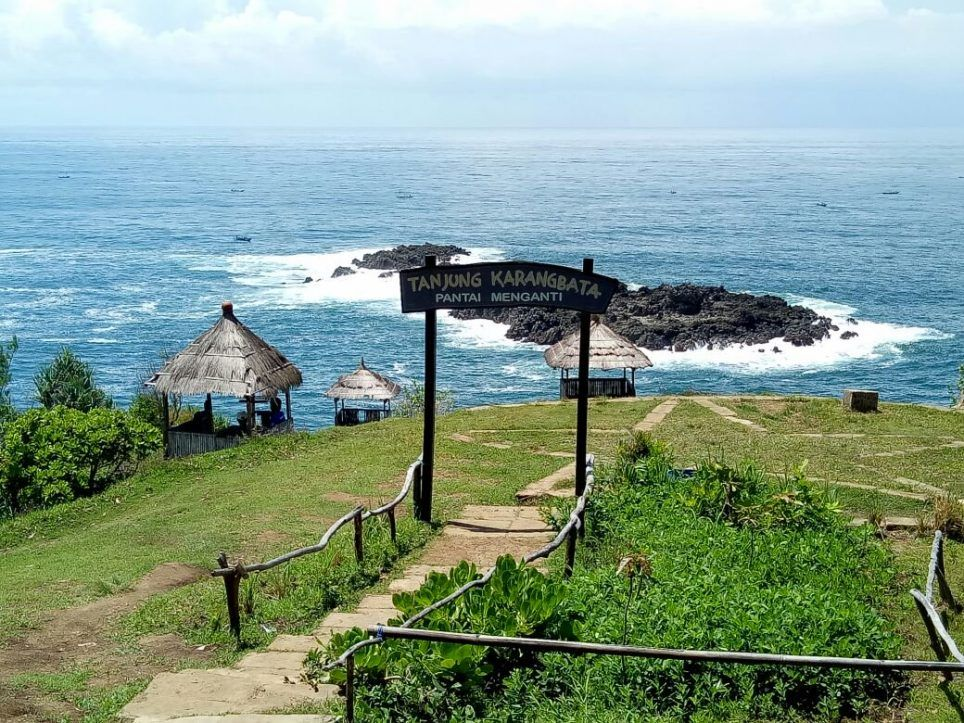
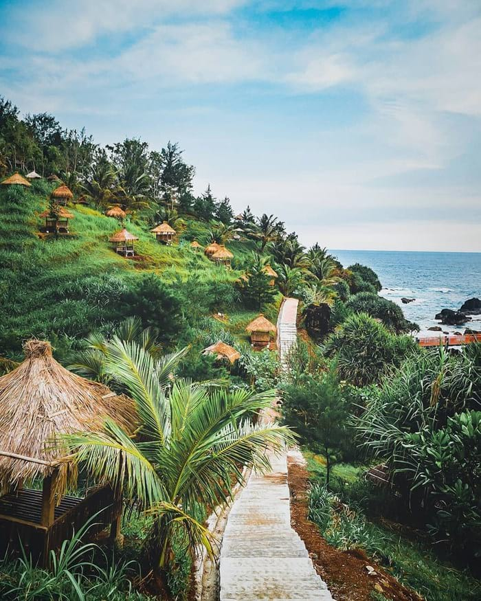
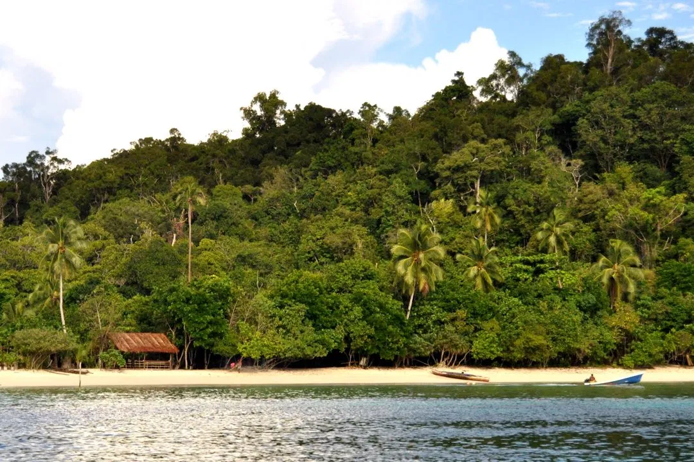

Kemping, Cara Menikmati Indahnya Pantai Menganti Kebumen
Liburan di pesisir selatan Kabupaten Kebumen, Jawa Tengah belum lengkap rasanya jika tak berkemping di Pantai Menganti.
Read More

Pantai Indah dengan Hamparan Pasir Putih di Kebumen
Bila sedang berkunjung ke daerah Kebumen dan mencari tempat wisata yang asyik, cobalah untuk datang ke Pantai Menganti. Daerah Kebumen memang kurang terkenal akan potensi tempat wisatanya, akan tetapi pantai ini sangat direkomendasikan untuk dikunjungi.
Read More

Pantai Menganti Objek Wisata Potensial
Warga Desa Karangduwur, Kecamatan Ayah, Kebumen menanami pohon di hutan gundul. Di wilayah sekitar objek wisata Pantai Menganti Desa Karangduwur itu, hutan milik Perhutani yang gundul mencapai 50 hektare.
Read More